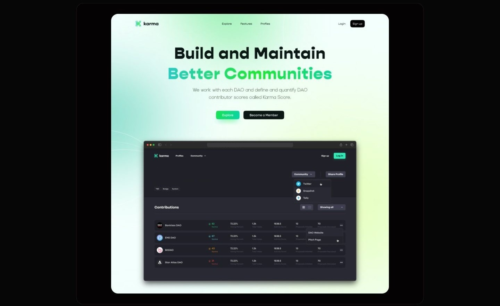
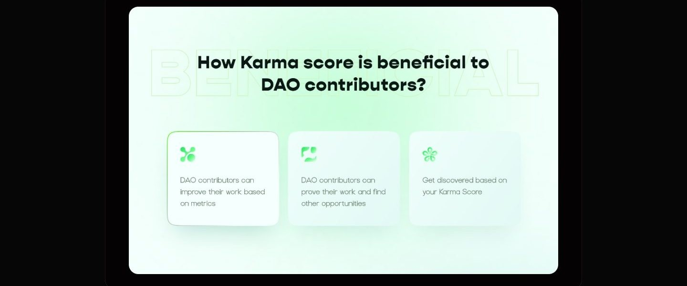
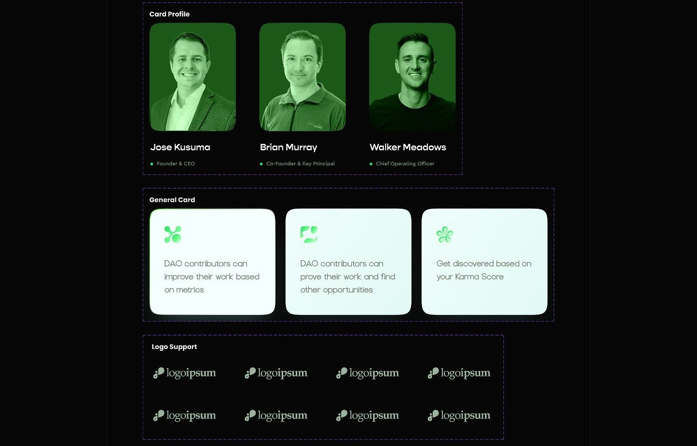

Case study 05 of 11 · Web3 reputation · Independent concept project
Karma
Scattered DAO contributions, assembled into one reputation score contributors can actually trust.
5 min read

Karma is a real DAO reputation product that lives at showkarma.xyz, and I have no affiliation with the company behind it. This page is an unsolicited concept study: the research, journey, homepage screens, and system work are my own exploration around Karma's premise, and none of it was commissioned, adopted, or shipped.
Making a synthetic score feel legible and fair enough that contributors would stake their reputation on it.
How the score explainer and the cross-DAO profile turn an abstract number into something a contributor can inspect.
Active everywhere, visible nowhere
DAO contributors do real work in proposals, votes, and discussions, but no system records any of it in one legible place. Activity scatters across Snapshot, forums, Discord, and on-chain voting, so the people holding a community together leave almost no verifiable trace. Karma's premise is a single score, which only works if the score itself is designed to be trusted.
- Contributions scatter across tools, so most participation is never documented anywhere.
- Without a shared scoring standard, recognition and rewards stay arbitrary and demotivating.
- Reputation dies at each DAO's border, so proven contributors restart from zero in every new community.
Desk research compared six DAO tools, including SourceCred, DAOhaus, Colony, Guild.xyz, DeepDAO, and Station, across scoring, profiles, rewards, and cross-DAO reputation.
The calls that shaped it
A score you can audit, not just admire
The Karma Score is itemized activity by activity, because a number nobody can verify is a number nobody will build a reputation on. The score is synthetic: it converts proposals, votes, and forum discussion into points, and any synthetic number invites suspicion. So the homepage spends a full section on the math itself, presenting example weights for creating proposals, voting, and discussing as oversized green numerals on white cards. I considered keeping the formula behind the interface and presenting the score as a polished badge, which is how most reputation products behave. The competitor analysis argued against it: SourceCred's automated scoring was powerful but opaque, and non-technical users struggled to adopt it. Publishing the itemization trades some mystique for auditability, and auditability is what turns a metric into a credential.

One profile that crosses DAO borders
Reputation only becomes an asset when it travels, and that aggregation mechanic is Karma's own, so the decision here was presentational: lead the homepage with the cross DAO profile as proof rather than describe it in copy. The journey mapping surfaced the payoff moment: joining a new DAO where people already know your track record. The live product already answers that moment, its profile stacks one row per DAO with a Karma Score, voting activity, and proposal counts, so the aggregation concept belongs to Karma, not to me. What I controlled was the framing: the homepage stakes its hero on a profile mockup built on that existing shape, with a share action at the top level and a source filter that scopes the view to a single tool like Snapshot, so the credential story lands before any feature copy asks for attention. The tradeoff is a denser table than any single DAO view would need, and the usability plan's per DAO checking and filtering tasks were written to probe exactly whether that density reads.

Mechanics first, interface second
For an audience primed to distrust black boxes, the homepage teaches how Karma works before it shows what Karma looks like. The page order is an argument: the hero states the promise, then three step cards explain the pipeline, then the score math, then the benefits. The step cards name the actual inputs, integrations with Discourse, Snapshot, on-chain voting, Discord, and DaoHaus, and walk from visibility to compensation to hiring in three short beats. I considered leading with a feature tour, the standard product-site move, but screens of an unfamiliar mechanic mean nothing until the mechanic itself lands. New DAO members were an explicit audience, and the step narrative exists so they grasp where the data comes from and what it produces before any interface asks for their attention. It is the cheapest section on the page and it carries the most explanatory weight.

Bright and systematic where crypto goes dark
The visual system runs against Web3's dark-UI default: white cards, soft green gradients, and oversized numerals that put the data in plain daylight.

How I planned to test trust in the score
Task-based sessions could confirm that people can find, read, filter, and share the score; whether they would trust it enough to change behavior inside a live DAO is beyond what a concept can establish.
This chapter is a usability plan written around a concept homepage for a product I do not work on; no session ran, no participant saw these screens, and nothing in this study is validated by live usage.
What I learned
Transparency is a design deliverable, not a policy statement. The section that did the most for the product's credibility was not a screen at all, it was the published point weights. When the core of a product is a synthetic number, showing the math is interface work, and it deserves the same layout attention as any hero.
Aggregation is where reputation gains its value. The moment the profile stacked four DAOs into one record with a share action, the product stopped reading as an analytics dashboard and started reading as a credential. That reframing came from the journey map, not the UI: the emotional peak was arriving somewhere new already known.
The order of explanation is itself an interface decision. Sequencing the homepage as promise, mechanic, math, benefit meant each section only asked for trust the previous one had earned. Leading with screens would have shown more product and communicated less, especially to the new contributors the platform most needs to convert.
Appendix: foundations and system
The system underneath the screens: a two-green palette with full neutral ramps, a 12-column desktop grid, and cards built once and reused across sections.


